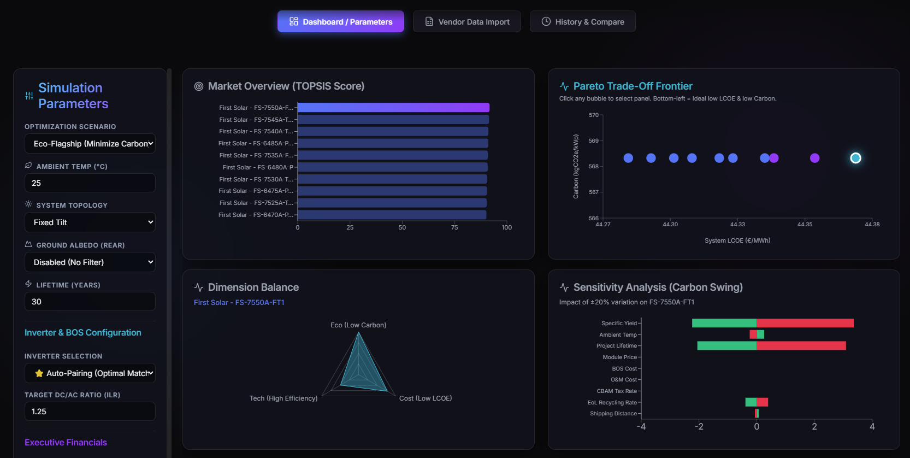
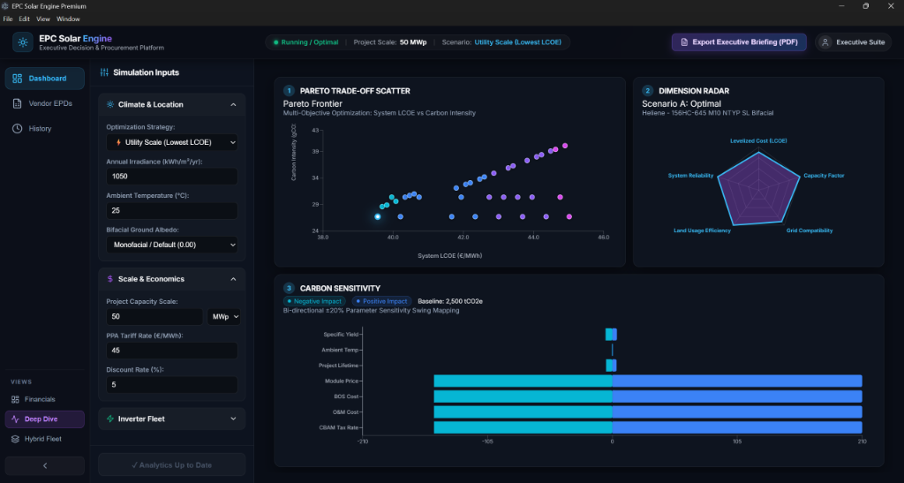
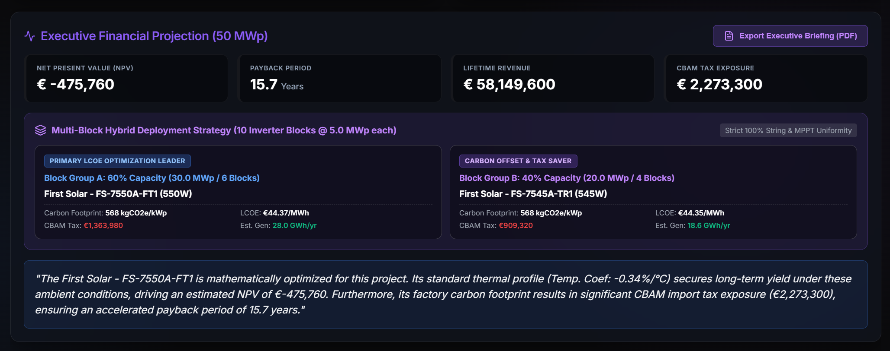
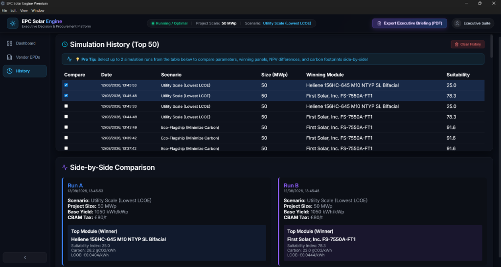

Physics-based Multi-Criteria Decision Analysis, dynamic LCOE optimization, and real-time executive financial pitch generation for utility-scale solar EPCs.


The core of the EPC Solar Engine mathematically normalizes and evaluates thousands of PV modules based on real-world physics. It accounts for complex environmental variables like dynamic temperature degradation, Scope 3 logistical carbon footprints, and CBAM tax exposure to output a true holistic TOPSIS score.

Stop wasting hours compiling technical rationale for stakeholders. The software calculates project Net Present Value (NPV), Payback Period, and CBAM Tax Risk in real time while synthetically generating a board-ready elevator pitch.
C-SUITE PROCUREMENT BRIEFING
| Rank | Manufacturer & Model | LCOE (€/MWh) | Score |
|---|---|---|---|
| #1 | First Solar - FS-7550A-FT1 | €44.37 | 91.7 |
| #2 | First Solar - FS-7545A-TR1 | €44.35 | 91.5 |
| #3 | First Solar - FS-7540A-TR1 | €44.34 | 91.2 |
Generate formal 2-Page C-Suite Procurement Briefing PDF reports built dynamically via ReportLab in one single click.
Clean executive title block formatted for board meetings and stakeholder reviews.
Top-3 TOPSIS comparison matrix detailing Wattage, System LCOE, and Carbon intensity.
Life Cycle Assessment breakdown of Module Net GWP, Inverter, and BOS racking carbon.
Quantified NPV, Payback Period, and Total CBAM Tax Exposure values.

Keep track of every procurement iteration with a privacy-first, local SQLite repository (`sim_history.db`).
Built for performance and mathematical integrity, utilizing industry-standard real-world datasets.
Powered by the SAM CEC Module Database for electrical parameters, custom EPD upload engine, and integrated Scope 3 logistical carbon benchmarks.
The backend utilizes FastAPI and predicate-pushdown Parquet/PyArrow data structures, allowing it to instantly evaluate 21,000+ PV modules with zero latency.
The entire Python physics engine and React frontend are natively compiled via Nuitka into a seamless, offline Windows executable application.
The EPC Solar Engine is an evolving, living ecosystem. Continuously advancing with next-generation energy modeling capabilities.
Vectorized hourly solar profiles to evaluate diurnal weather shifts, dynamic temperature losses, and Time-of-Use (TOU) tariffs.
Expanding into Hybrid Solar + Storage (BESS) systems modeling LFP vs NMC battery chemistry, LCOS, and embodied carbon $GWP_{BESS}$.
Machine Learning models forecasting long-term panel degradation, climate thermal penalties, and lifetime financial performance.
Note: This software is in active development. Upcoming features will roll out in iterative phases.